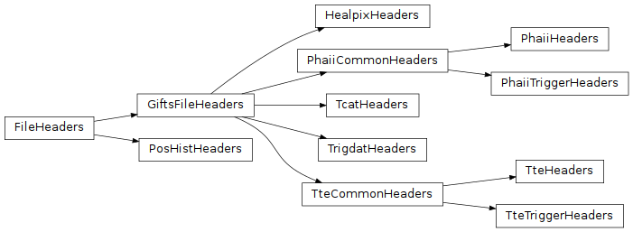

GIFTS FITS Headers (gdt.missions.gifts.headers)¶
Note
The GIFTS FITS headers implementation and this document are currently based on those provided by the Fermi Gamma-ray Data Tools, and will be revised in future versions.
This module defines all of the FITS headers for the public data files. While these classes are not usually directly called by the user, we may load one and see the contents and default values. For example, here is the set of header definitions for Trigger Data files:
>>> from gdt.missions.gifts.headers import TrigdatHeaders
>>> hdrs = TrigdatHeaders()
>>> hdrs
<TrigdatHeaders: 6 headers>
Here is the PRIMARY header and default values (retrieved by index):
>>> hdrs[0]
CREATOR = 'Gamma-ray Data Tools 2.2.1.dev0' / Software and version creating file
FILETYPE= 'GIFTS TRIGDAT' / Name for this type of FITS file
FILE-VER= '0.1.0 ' / Version of the format for this filetype
TELESCOP= 'GIFTS (P.I.: McBreen)' / Name of mission/satellite
INSTRUME= 'GIFTS ' / Specific instrument used for observation
OBSERVER= 'O''Callaghan' / GIFTS Pipeline Development
ORIGIN = 'GIFTS Team' / Name of organization making file
DATE = '2025-10-02T17:33:40.671' / file creation date (YYYY-MM-DDThh:mm:ss UT
DATE-OBS= '' / Date of start of observation
DATE-END= '' / Date of end of observation
TIMESYS = 'TT ' / Time system used in time keywords
TIMEUNIT= 's ' / Time since MJDREF, used in TSTART and TSTOP
MJDREFI = 51910 / MJD of GIFTS reference epoch, integer part
MJDREFF = '7.428703703703703e-4' / MJD of GIFTS reference epoch, fractional part
TSTART = 0.0 / [GIFTS MET] Observation start time
TSTOP = 0.0 / [GIFTS MET] Observation stop time
FILENAME= '' / Name of this file
TRIGTIME= 0.0 / Trigger time relative to MJDREF, double precisi
OBJECT = '' / Burst name in standard format, yymmddfff
RADECSYS= 'FK5 ' / Stellar reference frame
EQUINOX = 2000.0 / Equinox for RA and Dec
RA_OBJ = 0.0 / Calculated RA of burst
DEC_OBJ = 0.0 / Calculated Dec of burst
ERR_RAD = 0.0 / Calculated Location Error Radius
TRIGSCAL= 0 / [ms] Triggered timescale
TRIG_ALG= 0 / Triggered algorithm number
CHAN_LO = 0 / Trigger channel: low
CHAN_HI = 0 / Trigger channel: high
ADC_LO = 0 / Trigger channel: low (ADC: 0 - 4095)
ADC_HI = 0 / Trigger channel: high (ADC: 0 - 4095)
TRIG_SIG= 0.0 / Trigger significance (sigma)
GEO_LONG= 0.0 / [deg] Spacecraft geographical east longitude
GEO_LAT = 0.0 / [deg] Spacecraft geographical north latitude
DET_MASK= '' / Triggered detectors: (0-5)
RA_SCX = 0.0 / [deg] Pointing of spacecraft x-axis: RA
DEC_SCX = 0.0 / [deg] Pointing of spacecraft x-axis: Dec
RA_SCZ = 0.0 / [deg] Pointing of spacecraft z-axis: RA
DEC_SCZ = 0.0 / [deg] Pointing of spacecraft z-axis: Dec
INFILE01= '' / GBM catalog input data file
And here is the TRIGRATE header and default values:
>>> EXTNAME = 'TRIGRATE' / name of this binary table extension
TELESCOP= 'GIFTS (P.I.: McBreen)' / Name of mission/satellite
INSTRUME= 'GIFTS ' / Specific instrument used for observation
OBSERVER= 'O''Callaghan' / GIFTS Pipeline Development
ORIGIN = 'GIFTS Team' / Name of organization making file
DATE = '2025-10-02T17:33:40.671' / file creation date (YYYY-MM-DDThh:mm:ss UT
DATE-OBS= '' / Date of start of observation
DATE-END= '' / Date of end of observation
TIMESYS = 'TT ' / Time system used in time keywords
TIMEUNIT= 's ' / Time since MJDREF, used in TSTART and TSTOP
MJDREFI = 51910 / MJD of GIFTS reference epoch, integer part
MJDREFF = '7.428703703703703e-4' / MJD of GIFTS reference epoch, fractional part
TSTART = 0.0 / [GIFTS MET] Observation start time
TSTOP = 0.0 / [GIFTS MET] Observation stop time
TRIGTIME= 0.0 / Trigger time relative to MJDREF, double precisi
OBJECT = '' / Burst name in standard format, yymmddfff
RADECSYS= 'FK5 ' / Stellar reference frame
EQUINOX = 2000.0 / Equinox for RA and Dec
RA_OBJ = 0.0 / Calculated RA of burst
DEC_OBJ = 0.0 / Calculated Dec of burst
ERR_RAD = 0.0 / Calculated Location Error Radius
See Data File Headers for more information about creating and using FITS headers.
Reference/API¶
gdt.missions.gifts.headers Module¶
Classes¶
FITS headers for localization HEALPix files |
|
FITS headers for continuous TODO CTIME and CSPEC files |
|
FITS headers for trigger TODO CTIME and CSPEC files |
|
FITS headers for position history files |
|
FITS headers for trigger catalog files |
|
FITS headers for TRIGDAT files |
|
FITS headers for continuous TTE files |
|
FITS headers for trigger TTE files |
Class Inheritance Diagram¶
